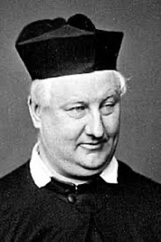

腓烈德立克威廉飞柏 Frederick William Faber (1814-1863)

诗人小传
每当我们唱“耶稣，耶稣，我的性命”这首诗歌的时候，总会觉得有一股奥秘的火焰，油然从我们的心底点起，而炙热我们的全魂。因此，我们禁不住要问这首诗歌的作者是谁呢？他是如何发现这团内住的火焰呢？他又如何，去经历这火焰在他身上所作炼净的工作呢？
生在教会多事之秋而持定基督生命
这首诗的作者，是十九世纪在英国天主教内最有名的诗人——腓烈德立克·威廉·飞柏，他于一八一四年生在英国约克郡卡瓦利（Calverley Yorkshire）教区牧师的馆邸。当时的牧师正是他的祖父，他在家中排行为第七子。飞柏家族原来是法国的更正教徒，或称为预格诺派（Huguenots）圣徒，当宗教改革运动横扫法国的时候，天主教会便不择手段，来扑灭任何反抗教皇的星星之火；然而加尔文的教义，却像野火一样地蔓延开来，连天主教的异端裁判所，都吓阻不住圣徒奔流的殉道之血。直到一五九八年，法王路易四世签署了有名的“南特勒令”（Edict of Nantes），他们才得与天主教徒同享平等的公民权和宗教自由。这种光景持续了八十七年，到了一六八五年，路易十四撕毁了这项敕令，逼迫又起，他们只有逃亡一途。飞柏家族就是当时逃到英国来的，到了飞柏出生的时候，他的家族在英国中等阶级中，已是显赫有名的了。
诗人出生在这样一个脱离天主教桎梏的家族中，为什么到了他自己壮年的时候，又投回天主教的怀抱呢？这件事的确令人费解，难道他忘了，他祖先们为了良心向神清白自由所流的殉道之血吗？十九世纪上半叶，是英国国教的多事之秋，先有一八三一年达秘等人得着“教会合一”的光，而兴起“普里茅斯弟兄们”；接着一八三三年歧市尔（J.Keble 1792-1866）在牛津大学掀起“牛津运动”。他们的原意都是好的，他们不只是不满意于当时国教下沉世俗化的光景，而且要弄清楚国教的立场和根源。很可惜，牛津运动后来变质了，运动中后起的领袖纽曼（John H.Newman，1801-1890），居然惑于天主教的“统一”和“庞大”，而投向教皇的怀抱；这还不止，一时之间，有九百多人（其中有三分之二是传道人）也盲从跟进，进入天主教，这实在是教会史上的一大憾事。出生牛津大学的飞柏无形中受了影响。但是我们仍然要感谢主：他个人属灵生命的成熟和影响力，并没有因此打岔。我们从他的诗歌里，就可以发现，他实在得着了奥秘派的精髓，进入了基督内住丰盛生命的境界。其实，这点也是他当时转入天主教的主因。虽然如此，他仍然没有背弃加尔文主义的真理。这两点，我们都可以从他的诗歌得着证实。
深入的恩赐与生命孕育于敬虔的童年
他出生后不久，就随父母迁往比夏·奥克兰（Bishop Auckland），他的童年是在那里渡过的。因为排行在他前面的两个哥哥，因病夭折，所以父母格外疼爱他，他母亲简直就把他看成神补偿给她的儿子似的来珍惜他，这使他从小就享受到比别人更多的亲情和关注。他童年时，哥哥们比他大了许多，都在外求学，所以他在家就像长子一样地长大，养成了他日后独立、决断、热情又任性的性格。这个地区附近的许多古迹，也在他的脑海中留下了深刻的印象，启发他爱美和诗赋的天分。
但是，最宝贵的，并不是这些外在优裕的环境，而是他从母爱中，吸吮而得着的神同在。在他的一首诗一一“我童年时代的神”（The God of my Childhood）中，他描述了自己童年时代的内室经历。他说，神在他童年就成了他心中的爱、纯净的光。神的爱何其甘甜，好像母爱那样安静慈祥。他在学校上课时，仿佛主面就在眼前；晚上若没有主手的护庇，他就不肯合眼；而清晨一醒来，他就要吻一吻那只可爱的“手”，最叫他流连的，就是这种浓郁神的同在。一到主日回家，他就赖着妈妈，给他讲许多关于耶稣奇妙的故事。末了，他说：“我活过两种生命，迥异而又相互影响；一个是母亲给我的，渐渐逝去；另一个是主给我的，历久弥新。”他的传记作者，和他一生最亲密的同伴，都说飞柏是个天生的奥秘派（mystic），从童年到安息，都沉浸在神的同在中。
一八二五年，他被送到湖区的科比·司提芬（Kirkby Stephen，Lakes District），在吉普逊（John Gibson）牧师家中受教，这一年是他自称一生的“黄金岁月”。当地的湖光山色，和古老的教堂，往往吸引他徘徊数日，沉思默想。他说，每次听到越野传来的教堂晚钟时，都是他感觉最依依难舍的时刻。他在那里默想什么呢？日后他许多的作品，都反映出湖区的美丽和古典，他的信息——一“伯利恒”——讲到主耶稣人性的一本书，居然有许多景物是湖区特色的。
在怀疑动摇中经历神绝对主权的不移恩典
一八二七年他转到海洛（Harrow）读书，在这里的四年，他在英国文学上，打下了根基。十五岁的那年，母亲去世了，这对他而言，是个很重的打击；加上他当时读了许多人文作品，尤其是拜伦的，叫这个充满浪漫思想的男孩，开始怀疑神了。感情和信仰上的双重痛苦，压得他透不过气来，而他又不能逃避。从儿时一直而有的属灵经历告诉他，主是又真又活的；然而他所读的人文作品，却怂恿他用理性去怀疑神。他真是苦啊！如果主是真的，那么，他就应该拒绝所有的怀疑和人言，将自己献给主，一生服事祂；但是，如果主是假的话……他不敢想下去，因为那是何等地虚无。当时，他带着所有的问题和矛盾，去找校长隆理博士（Dr.Charles Longley）倾述。校长并没有跟他辩解，或作教义问答，而是用他的信心和温柔把他挽回来了。诗人说：“我一辈子也不会忘记校长的温柔和慈霭。”
之后，他又得着柯宁翰牧师（Rev.John Cunningham）的帮助，坚固了他的信仰。柯宁翰牧师是当代有名的福音派急先锋，时常宣讲“基督徒乃是神的儿子，而非奴仆”的真理，这点使飞柏认识了“神儿子名分”的宝贵。飞柏从小生长在加尔文主义的传统下，可是他从来没有这么深刻地经历过神绝对主权的保守和恩典，直到他一度迷失，又被主所寻回，才亲身经历了。